Внешняя гидроизоляция
 Серый шлам К11
Серый шлам К11
K11 Schlamme grau
Минеральный гидроизоляционный шлам. Обладает хорошим сцеплением с поверхностью, может выдерживать нагрузку вскоре после нанесения. Устойчив к морской воде и низким температурам.
Для долгосрочной гидроизоляции минеральных оснований от влажности грунта и воды под давлением. Минеральная основа не должна содержать гипс, разделительные слои должны быть удалены. Применяется для строительных конструкций, соприкасающихся с грунтом, таких как подвалы, подземные гаражи и бетонные конструкции, а также для покрытия внутренней поверхности резервуаров питьевой воды. Для изготовления гидроизоляционного слоя между подвальным цоколем и основанием стены.
Испытан согласно инструкции немецкого Союза Строительной Химии.
Общенадзорный строительный сертификат.
Испытан согласно DVGW-W 347 и рекомендациям KTW.
Giscode Zp1
Расход: для защиты от влажности грунта - ок. 2 кг/м.кв. (слой прим. 1,2 мм)
для защиты от воды под давлением - ок. 4 кг/м.кв. (слой прим. 2,4 мм)
Упаковка: мешок 25 кг
Системные решения (файл PDF)
Гидроизоляционные шламы на минеральной основе
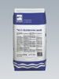
Белый шлам К11
K11 Schlamme weiss
Минеральный гидроизоляционный шлам белого цвета. Обладает хорошим сцеплением с поверхностью. Морозоустойчив и долговечен. Для длительной гидроизоляции минеральных поверхностей от влажности грунта и воды под давлением. Применяется на таких участках, где покрытия видны, например, в области цоколя, в резервуарах с питьевой водой или в качестве последнего слоя для Специальной Системы AQUASTOPP. Может быть пигментирован обычными цементными красителями.
Giscode Zp1.
Расход: для защиты от влажности грунта - ок. 3 кг/м.кв. для защиты от воды под давлением - ок. 6 кг/м.кв.
Упаковка: мешок 25 кг
Системные решения (файл PDF)
Гидроизоляционные шламы на минеральной основе
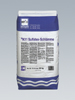
Шлам К11 SulfatexK11 Sulfatex Schlamme
Минеральный гидроизоляционный шлам. Обладает повышенной и долгосрочной устойчивостью к воздействию сульфатов, в том числе в областях, подверженных давлению воды. Устойчив к низким температурам и морской воде. Для защиты строительных конструкций, подверженных воздействию сульфатов, от влажности грунта и воды под давлением, в частности: подвалов, подземных гаражей, плавательных бассейнов, а также соприкасающихся с водой участков таких сооружений, как канализационные коллекторы и системы, в частности трубы, шахты, канавы и т.д. Минеральная основа не должна содержать гипс, разделительные слои должны быть удалены.
Giscode Zp1
Расход: для защиты от влажности грунта - ок. 2 кг/м.кв. (слой прим. 1,2мм)
для защиты от воды под давлением - ок. 4 кг/м.кв. (слой прим. 2,4мм)
Упаковка: мешок 25 кг
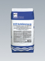
Шлам К21 - Серый
K21 Schlamme grau
Минеральный гидроизоляционный шлам. Устойчив к воздействию морской воды и мороза. Для долговременной защиты минеральных, соприкасающихся с землей строительных конструкций, таких как подвалы, подземные гаражи, и т.д. от влажности грунта и воды под давлением. Пригоден для гидроизоляции между подвальным цоколем и стенами, а также для гидроизоляции плит пола от поднимающейся влаги. Минеральная основа не должна содержать гипс, разделительные слои должны быть удалены.
Giscode ZP1
Расход: для защиты от влажности грунта - ок. 3 кг/м.кв. (слой прим. 2 мм)
для защиты от воды под давлением - ок. 6 кг/м.кв. (слой прим. 4 мм)
Упаковка: мешок 25 кг
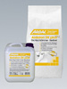
Шлам Ардалон 2К Плюс
Ardalon 2K Plus
2-компонентный эластичный минеральный гидроизоляционный шлам. Не содержит растворителей. Перекрывает трещины до 2 мм. Для внутренних и внешних работ. Наносится щёткой или мастерком.
- для гидроизоляции между керамической плиткой / облицовкой из природного камня и минеральным основанием полов и стен в сырых помещениях, на балконах и террасах
- для гидроизоляции в плавательных бассейнах
- для внешней и внутренней гидроизоляции строительных конструкций от влажности грунта и воды под давлением.
Согласно ZDB соответствует I , II и III классам водостойкости.
Согласно AbP соответствует А1, А2 и В классам.
Пониженное содержание солей хромовой кислоты в соответствии со стандартом TRGS 613.
Углы между стенами, а также между стенами и полом заклеить Уплотнительной лентой ARDAL и Внутренними / Внешними углами ARDAL. Для проходок и установочных элементов используются Уплотнительные манжеты ARDAL.
Компонент А: Giscode ZP 1, Компонент B: Giscode D 1
Расход: под плитку на балконах, террасах, в сырых помещениях - ок. 3,5 кг/м.кв. (слой прим. 2мм)
под плитку в плавательных бассейнах - ок. 5 кг/м.кв. (слой прим. 3мм)
для гидроизоляции от влажности грунта - ок. 2 кг/м.кв.
для гидроизоляции от воды под давлением - ок. 4 кг/ м.кв.
Хранение: в сухом и прохладном месте, беречь от мороза.
Упаковка: сухой комп.- мешок 25 кг; жидкий компонент канистра 5 кг.
Системные решения (файл PDF)
Гидроизоляция шламом Ардалон 2К Плюс балконов и террас

Эластичный серый шлам К11
K11 Flex Schlamme grau
2-компонентный минеральный гидроизоляционный шлам, обладающий очень хорошим сцеплением с минеральной поверхностью. Для внешней и внутренней гидроизоляции. Улучшен в значительной степени добавлением полимерных материалов. Выдерживает нагрузку вскоре после нанесения. Устойчив к морской воде и низким температурам. Предназначен для надежной гидроизоляции подвалов, шахт и т.п. Используется в старых и новых постройках для защиты от воды под давлением, как с внешней, так и с внутренней стороны. Применяется при ремонтных работах в качестве замедлителя солеобразования, а также как основа под санирующую штукатурку. При использовании битуминозных гидроизоляционных материалов рекомендуются для защиты от воды под давлением, действующей в областях выступов со стороны основы. Минеральная основа не должна содержать гипс, разделительные слои должны быть удалены.
Испытан согласно инструкции немецкого Союза строительной химии.
Общенадзорный строительный сертификат.
Испытан согласно DVGW-W 270.
Компонент А: Giscode ZP1 Компонент В: Giscode D1
Расход: 2,5 - 3,0 кг/м.кв. (толщина слоя 1,5 - 1,8мм)
Хранение: в сухом и прохладном месте, беречь от мороза.
Упаковка: Комп. А - мешок 15 кг., Комп. В - канистра 5 кг.
Системные решения (файл PDF)
Гидроизоляционные шламы на минеральной основе
Битфлекс К100 и Эластичный серый шлам К11
Толстослойные битумные 1К и 2К покрытия
Гидроизоляционная пленка SK 3000 S и Эластичный серый шлам К11
Горизонтальная отсечная гидроизоляция – Окремнитель Кизай

Эластичный белый шлам К11
K11 Flex Schlamme weiss
Минеральный гидроизоляционный шлам белого цвета. Применяется аналогично Эластичному серому шламу К11 на видимых участках как заключительный слой.
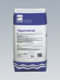
Уплотнительный раствор
Sperrmortel
Раствор для ремонтных работ. Универсальный. Улучшен полимерами. Даёт малую усадку. Водоотталкивающий. Обладает очень хорошим сцеплением с поверхностью и повышенной прочностью. Устойчив к низким температурам и морской воде. Размер зерен до 2 мм.
Применяется для изготовления галтелей, как цокольная штукатурка и штукатурка для сырых помещений, для ремонта бетона и т.д.
Giscode ZP1
Расход: ок. 1,8 кг/литр полого пространства ок. 2,0 кг/пог. метр галтелей (при длине стороны 5 см)
Упаковка: мешок 25 кг
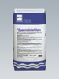
Уплотнительный раствор - Файн
Sperrmortel fein
Раствор для ремонтных работ. Универсальный. Улучшен полимерами. Даёт малую усадку. Водоотталкивающий. Обладает очень хорошим сцеплением с поверхностью и повышенной прочностью. Устойчив к низким температурам и морской воде. Размер зерен до 1 мм.
Применение аналогично Уплотнительному раствору. Благодаря мелкозернистой структуре применяется в тех случаях, когда требуется нанести тонкий слой (напр., в качестве водоотталкивающей шпатлевки и шовного раствора).
Giscode ZP1
Расход: ок. 1,8 кг/л полого пространства ок. 2,0 кг/пог. метр галтелей (при длине канта 5 см)
Упаковка: мешок 25 кг
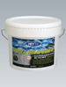
Акваблокер
Aqua Blocker
Гидроизоляционный материал на основе МS-полимера (SMP, гибридный материал – сочетает преимущества силикона и полиуретана). Не содержит растворителей, воды и битумов. Обеспечивает защиту от влажности грунта и воды под давлением. После просыхания водонепроницаем, перекрывает трещины и устойчив к естественным бетонагрессивным грунтовым водам. Сочетает перекрытие трещин и водонепроницаемость стандартного толстослойного покрытия из модифицированного битума с устойчивостью к ливням сразу же после нанесения. Гидроизоляция соответствующая DIN 18195 обеспечивается при расходе прим. 2.3 кг/м.кв. и толщине слоя 1,5 мм, при этом осуществляется перекрывание трещин до 5мм. Наносится без грунтовки также на влажных основаниях. Обладает очень сильным сцеплением с различными типами оснований. Наносится в два слоя короткошерстным валиком.
Расход: 2,3 кг/м.кв. для защиты от влажности грунта и воды под давлением
0,4 кг/м.кв. для фиксации изоляционных плит
Упаковка: банка 1 кг., ведро 14 кг.  Акваблокер Ликвид
Акваблокер Ликвид
Aqua Blocker liquid
Материал на основе технологии MS-полимеров. Модификация для горизонтальных поверхностей.
Низковязкий, саморастекающийся материал, не содержащий растворителей, воды и битума. Обеспечивает защиту от влажности грунта и воды под давлением.
Сочетает надёжное перекрытие трещин и водонепроницаемость стандартного толстослойного покрытия из модифицированного битума с лёгкостью нанесения битумной эмульсии. Гидроизоляция соответствующая DIN 18195 при расходе примерно 2,3 кг/м2 и толщине слоя 1,5 мм. обеспечивает перекрывание трещин шириной 10 мм.
Гидроизоляция: Для долгосрочной защиты фундаментов и плит пола от влажности грунта и воды под давлением.
Гидроизоляция плоских крыш: Для гидроизоляции плоских крыш с укладкой армирующей ткани в места особенно опасные с точки зрения раскрытия трещин.
Гидроизоляция на балконах и террасах: Для слоя торможения водяного пара под стяжкой на балконах и террасах и для гидроизоляции, непосредственно к которой приклеивается керамическая облицовка.
Промышленные полы: Для слоя торможения водяного пара под стяжкой в промышленных цехах и для гидроизоляции, непосредственно к которой приклеивается керамическая облицовка, или на которую наносится эпоксидное или полиуретановое покрытие.
Деформационные и подвижные швы: Для заливки в подвижные и деформационные швов в промышленных применениях. Швы заливаются непосредственно из упаковки.
Акваблокер ликвид наносится без грунтовки в два слоя при помощи валика с коротким ворсом или ракли. и обеспечивает очень хорошее сцепление даже на влажных поверхностях при самых различных типах оснований при температурах нанесения от +5ºС до +35ºС. После просыхания водонепроницаем, перекрывает раскрытие трещин до 10 мм и устойчив к естественным бетонагрессивным грунтовым водам.
Расход: прим.2,3 кг/м2, в качестве гидроизоляционного покрытия.
ширина шва (мм) х глубину шва (мм)= мл/метр шва, в качестве герметика.
Упаковка: коробки по 14 кг (2 пакета по 7 кг в коробке)
Системные решения (файл PDF)
Универсальная гидроизоляция Акваблокер и Акваблокер ликвид
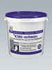
Гидроизоляционная масса K100-Черная
K100 schwarz
1-компонентная битумная эмульсия без наполнителей. Готова к употреблению. Улучшена полимерами. После полного высыхания водонепроницаема, перекрывает трещины и устойчива к естественным грунтовым водам, вызывающим коррозию бетона. Устойчива к старению. Устойчива к жидкому навозу в соответствии с DIN 11622-2.
Используется для защиты от влажности грунта и воды под давлением, а также в качестве защитного покрытия бетонированных или оштукатуренных ёмкостей для хранения жидкого навоза. Разбавленная водой эмульсия используется в качестве грунтовки под одно- и двухкомпонентные битумные покрытия и Гидроизоляционные пленок SK .
Giscode ВВР 10
Расход: для защиты от влажности грунта - ок. 1,0 кг/м.кв.
для защиты от напорной воды - ок. 1,5 кг/м.кв.
в качестве грунтовки - ок. 0,1 кг/м.кв.
Хранение: в сухом и прохладном месте, беречь от мороза.
Упаковка: ведро 10 кг, 25 кг
Системные решения (файл PDF)
Битфлекс К100 и Эластичный серый шлам К11
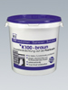
Гидроизоляционная масса К100-Коричневая
K100 braun
Применяется аналогично Гидроизоляционной массе К100 чёрной. Используется в тех случаях, когда необходимо визуально определять количество нанесенных слоев.
Giscode ВВР 10
Расход: ок. 0,5 кг/м.кв./ слой
Хранение: в сухом прохладном месте, беречь от мороза.
Упаковка: ведро 25 кг
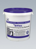
Гидроизоляционная масса Битфлекс
Bitflex
1-компонентная битумная эмульсия без наполнителей. Готова к применению. Улучшена полимерами. Очень хорошо перекрывает трещины. Тиксотропная. Долговечна и устойчива к жидкому навозу.
Для долговременной гидроизоляции подвалов, шахт, подземных гаражей и т.д.
Giscode ВВР 10.
Расход: для защиты от влажности грунта и воды под давлением - ок. 2,5 кг/м.кв.
Хранение: в сухом прохладном месте, беречь от мороза.
Упаковка: ведро 25 кг.
Системные решения (файл PDF)
Битфлекс К100 и Эластичный серый шлам К11
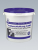
Толстослойное покрытие 1К
Dickbeschichtung 1K
1-компонентное гидроизоляционное битумное покрытие с добавлением полистирола. Очень высокая степень перекрытия трещин. Устойчиво к старению. Готово к использованию, наноситься с помощью шпателя. Испытано согласно DIN18195.
Для защиты от влажности грунта и воды под давлением, соприкасающихся с грунтом строительных конструкций, таких как подвалы, подземные гаражи, фундаменты, проходки труб и т. п. Также используется для наклеивания защитных, дренажных и изоляционных плит. Покрытие непроницаемо для радона.
Giscode ВВР 10
Расход: для защиты от влажности грунта - 4 - 5 л/м.кв.
для защиты от напорной воды - 6 - 7 л/м.кв.
качестве клея для плит - ок. 1 л/м.кв.
Хранение: в сухом прохладном месте, беречь от мороза.
Упаковка: ведро 30 л.
Системные решения (файл PDF)
Толстослойные битумные 1К и 2К покрытия
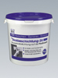
Толстослойное покрытие 2К
Dickbeschichtung 2K
2-компонентное гидроизоляционное битумное покрытие. Армировано волокнами. Хорошо перекрывает трещины. Устойчиво к старению. Быстро высыхающее, устойчиво к дождю вскоре после нанесения. Наносится с помощью шпателя. Испытано согласно DIN 18 195.
Применяется для защиты от влажности грунта и воды под давлением, соприкасающихся с грунтом строительных конструкций, таких как подвалы, строения без подвалов, фундаменты, проходки труб и т. п. Также используется для наклеивания защитных, дренажных и изоляционных плит. Покрытие непроницаемо для радона.
Компонент А: Giscode ВВР 10, Компонент В: Giscode ZP 1
Расход: для защиты от влажности грунта - 4 - 5 кг/м.кв.
для защиты от напорной воды - 6 - 7 кг/м.кв.
в качестве клея для плит - ок. 1 кг/м.кв.
Хранение: в сухом прохладном месте, беречь от мороза.
Упаковка: Комп. А - ведро 25 кг. Комп. В - мешок 8 кг.
Системные решения (файл PDF)
Толстослойные битумные 1К и 2К покрытия
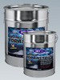
Грунтовка SK
SK Voranstrich
Низковязкая битуминозная грунтовка с большой глубиной проникновения.
Наносится на сухие минеральные поверхности с любой впитывающей способностью (низкой, средней или высокой) для улучшения сцепления с поверхностью Гидроизоляционных пленок SK и Гидроизоляционной массы SK. Для слегка влажных оснований можно использовать Гидроизоляционную массу K 100.
Giscode ВВР 10
Расход: слабо впитывающие поверхности - ок. 0,25 л/м.кв.
впитывающие/шероховатые поверхности - 0,2 - 0,6 л/м.кв.
газобетон - 0,6 - 0,9 л/м.кв.
Хранение: в сухом и прохладном месте
Упаковка: ведро 5 кг, 10 кг, 25 кг
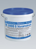
Грунтовка SK 3000 S
SK 3000 S Voranstrich
Высококачественная грунтовка на битумной основе для улучшения сцепления битумных уплотнительных плёнок SK. Растворимая в воде, быстровысыхающая грунтовка, наносимая на любые слегка влажные или сильно впитывающие, крупнопористые минеральные основания для улучшения адгезии Уплотнительной пленки SK 3000 S. Используется при температурах от -5 до +10 градусов Цельсия.
Giscode ВВР 10
Расход: в неразбавленном виде - ок. 0,3 л/м.кв.
Хранение: в сухом прохладном месте, беречь от мороза.
Упаковка: ведро 10 л.
Системные решения (файл PDF)
Гидроизоляционная пленка SK 3000 S и Эластичный серый шлам К11
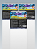
Пленка SK3000 S
SK 3000 S Dichtungsbahn
Самоклеящаяся гидроизоляционная плёнка для круглогодичных гидроизоляционных работ. Применяется в холодном состоянии. Испытана согласно DIN 18 195. Предназначена для долговечной гидроизоляции подвалов, балконов, террас, сырых помещений, фундаментов и оснований мостов, сборных железобетонных изделий и т.п. от влажности грунта и воды без давления (в некоторых конструкциях - от воды под давлением). Водонепроницаема, включая ливневые дожди, сразу же после наклеивания. Работы можно проводить при температуре до -5 градусов Цельсия.
Каширование: Высокопрочная на разрыв, крестообразно ламинированная HDPE -пленка.
Расход: 1,05 м. кв. /м.кв.
Хранение: в вертикальном положении, при температуре от 5 до 15 градусов Цельсия.
Упаковка: рулон 20 м.кв. (ширина 1 м, толщина 1,5 мм)
Внешняя гидроизоляция фундаментов с помощью Плёнки SK3000S
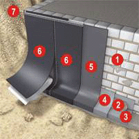
1. Трассовый раствор - для выравнивания поврежденных мест.
2. Уплотнительный раствор - для изготовления галтелей.
3+4. Эластичный серый шлам K11 - изолирует от воды, действующей со стороны основы.
5. Грунтовка SK, Грунтовка SK 3000 S, Битфлекс или K100 - грунтовки различных видов поверхностей.
6. Пленки SK2000 S / SK3000 S, приклеиваются в холодном состоянии для гидроизоляции от грунтовой влаги и воды под давлением..
7. Герметик Эласторуф - для герметизации стыков, металлической перфорированной ленты, а также труднодоступных мест.
Дополнительно используется:
Клейкая лента SK - для оклейки углов, краев, пазов, швов и для приклеивания дренажных и изоляционных плит.
Плёнка SK3000 S обеспечивает гидроизоляцию сразу после нанесения.
Плёнка SK3000 S допускает нанесение при отрицательных температурах.
Системные решения (файл PDF)
Гидроизоляционная пленка SK 3000 S и Эластичный серый шлам К11
Пленка армированная SK2000 Alu
SK 2000 Alu Dichtungsbahn
Кашированная алюминием, самоклеящаяся по всей поверхности, гидроизоляционная пленка на битумной основе. Применяется в холодном состоянии. Высокоэластичная. Долговечно устойчива к ультрафиолетовому излучению. Для небольших плоских крыш, крыш гаражей и т.п.
Расход: 1,05 м. кв./м.кв.
Хранение: в вертикальном положении, при температуре от 5 до 15 градусов Цельсия.
Упаковка: рулон 20 м.кв. (ширина 1,05 м, толщина 1,5 мм)
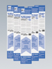
Пленка армированная SK2000 Alu Grun
SK 2000 Alu grun Dichtungsbahn
Кашированная алюминием, анодированным до зеленого цвета, самоклеящаяся по всей поверхности, применяемая в холодном состоянии, гидроизоляционная пленка на битумной основе. Высокоэластичная. Долговечно устойчива к ультрафиолетовому излучению. Укреплена тканью. Для небольших плоских крыш, крыш гаражей и т.п.
Расход: 1,05 м. кв./м.кв.
Хранение: В вертикальном положении, при температуре от 5 до 15 градусов Цельсия.
Упаковка: рулон 15 м.кв. (ширина 1,05 м, толщина 1,7 мм), рулон 20 м.кв. (толщина 1,5 мм)
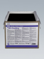
Гидроизоляционная масса SK
SK-Coating
Гидроизоляционная и заливочная масса на специальной битумной основе. Применяется в разогретом состоянии. Термоэластичная. Устойчива к низким температурам и солям оттаивания. Не содержит растворителей. Для защиты строительных конструкций от влажности грунта и воды под давлением. Применяется для покрытия строительных конструкций, соприкасающихся с грунтом, изготовленных из бетона, силикатного кирпича, газобетона, например, внешних стен подвалов, подземных гаражей и т.п. Можно наносить при отрицательной температуре до -15 градусов Цельсия. Покрытие сразу же после нанесения непроницаемо для воды и устойчиво к дождям.
Расход: 1,5 - 3 кг/м.кв.
Хранение: в сухом прохладном месте.
Упаковка: блок 10 кг

Клейкая лента SK
SK Klebestreifen
Высокоэластичная, двусторонняя, самоклеящаяся, применяемая в холодном состоянии битумная лента. Устойчива к старению. Шовная лента для герметизации соединительных швов зданий, примыканий труб и стыков стен. Также применяется для приклеивания защитных, дренажных и изоляционных плит на Уплотнительную пленку SK 3000S.
Упаковка: рулон 12 м (ширина 15 см, толщина 1,5 мм)
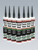
Эласторуф
Elastoroof
Эластично-пластичный битумный кровельный герметик и клей, модифицированный каучуком. Для герметизации соединений кровли, проходок, крепления изоляционных материалов. Ремонтный материал для битуминозных кровельных покрытий. Исключительно устойчив к старению. Также применяется совместно с Уплотнительными пленками SK. Хорошее сцепление, в т. ч. с влажными поверхностями.
Цвет: черный
Хранение: от +5 до 30 градусов Цельсия.
Упаковка: туба 310 мл
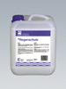
Дождезащитное средство
Regenschutz
Распыляемый раствор с низкой вязкостью. На свеженанесенных битумных покрытиях Битфлекс, К100, Толстослойное покрытие 1К и 2К образует нерастворимую в воде пленку для защиты от дождя.
Расход: 0,15 - 0,25 л/м.кв.
Хранение: в сухом, прохладном месте. Замёрзший материал оттаивать при комнатной температуре.
Упаковка: канистра 10 л
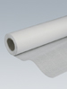
Трикотажная лента К 100
K100 Gewebeband
Эластичный, устойчивый к погодным условиям и к действию микроорганизмов трикотажный материал из полиэстера. Для армирования битумных покрытий (напр. К100, Битфлекс) в областях, подверженных значительной нагрузке или опасности возникновения трещин, в швах, проходках труб и т.д.
Упаковка: рулон 100 м. (ширина 25 см или 60 см)
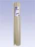
Армирующее полотно 100Armierungsgewebe 100
Устойчивая к воздействию щелочи стеклоткань, покрытая синтетическим материалом, удобная в применении. Долговечная. Проверена согласно DIN 18 195.
Для усиления одно - и двухкомпонентных битумных покрытий (напр., Толстослойное покрытие 1К, Толстослойное покрытие 2К) в областях, подверженных значительной нагрузке или опасности возникновения трещин.
Упаковка: рулон 50 м, ширина 100 см.